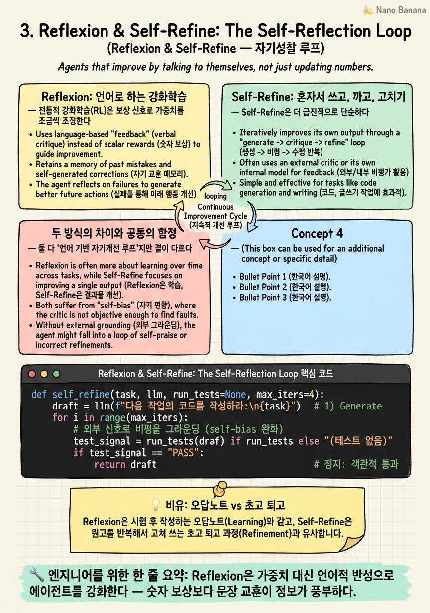

Reflexion & Self-Refine: The Self-Reflection Loop

🎯 학습 목표
- Reflexion의 '언어로 강화학습' 아이디어와 episodic memory buffer를 설명한다
- Self-Refine의 generate→critique→refine 단일 LLM 루프를 구현할 수 있다
- 두 방법이 가중치 업데이트 없이 성능을 올리는 원리를 이해한다
- 자기성찰 루프의 한계(self-bias, 수렴 실패)를 진단한다
- 언제 반성을 메모리에 남기고(Reflexion) 언제 즉석에서 고쳐쓸지(Self-Refine) 판단한다
ReAct가 '행동하는 루프'를 만들었다면, 다음 질문은 자연스럽다. 실패하면 어떻게 배우지? 사람은 시험을 망치면 '아, 이 부분을 놓쳤구나' 반성하고 다음엔 다르게 한다. 그런데 LLM을 다시 훈련(가중치 업데이트)하는 건 비싸고 느리다. 더 가벼운 방법은 없을까?
Reflexion(Shinn et al., NeurIPS 2023)의 답은 우아하다. 가중치 대신 언어로 강화하라. 에이전트가 작업에 실패하면, 무엇이 왜 잘못됐는지를 스스로 문장으로 적어 episodic memory buffer(일화 기억 버퍼) 에 저장한다. 다음 시도 때 이 반성문을 컨텍스트에 넣어주면, 같은 실수를 피한다. 훈련 없이, 오직 텍스트로 학습이 일어난다.
Self-Refine(Madaan et al., 2023)은 이걸 더 미니멀하게 만든다. 별도 메모리도, 여러 시도도 필요 없다. 하나의 LLM이 답을 쓰고 → 자기 답을 비평하고 → 그 비평으로 고쳐 쓰기를 반복한다. 생성자·비평가·수정자가 전부 같은 모델이다. 이 장에서는 '루프에 반성을 심는' 두 가지 방식을 배운다 — 시도 간(Reflexion) 반성과 시도 내(Self-Refine) 반성.
핵심 내용
Reflexion: 언어로 하는 강화학습
전통적 강화학습(RL)은 보상 신호로 가중치를 조금씩 조정한다. 느리고, 많은 시도가 필요하고, 왜 그렇게 바뀌었는지 해석하기 어렵다. Reflexion은 이 루프를 통째로 언어 공간으로 옮긴다.
"Reflexion, a novel framework to reinforce language agents not by updating weights, but instead through linguistic feedback." — Shinn et al., 2023
동작은 이렇다. 에이전트가 작업을 시도한다 → 실패 신호(테스트 불통과, 목표 미달)를 받는다 → 그 실패를 언어로 성찰한다: "내가 X를 가정했는데 그게 틀렸다. 다음엔 먼저 Y를 확인해야 한다." → 이 반성문을 episodic memory에 저장 → 다음 시도 때 이 메모리를 컨텍스트에 주입.
핵심은 반성문이 다음 시도의 지침이 된다는 것이다. 보상이라는 숫자 한 개(scalar)보다, '무엇을 왜 틀렸는지'라는 문장이 훨씬 정보가 풍부하다. 그래서 단 몇 번의 시도만으로도 극적으로 개선된다. 가중치는 그대로인데, 컨텍스트에 쌓인 반성이 에이전트를 똑똑하게 만든다.
Self-Refine: 혼자서 쓰고, 까고, 고치기
Self-Refine은 더 급진적으로 단순하다. 외부 도구도, 별도 훈련 데이터도, 여러 에피소드도 없다. 단 하나의 LLM이 세 가지 역할을 번갈아 한다.
"the same LLM provides feedback for its output and uses it to refine itself, iteratively." — Madaan et al., 2023
루프는 세 박자다.
-
Generate — 초안을 쓴다.
-
Feedback — 같은 모델이 그 초안을 비평한다. ("이 함수는 엣지 케이스를 놓쳤다")
- Refine — 그 피드백을 반영해 고쳐 쓴다.
그리고 만족스러울 때까지 2→3을 반복한다. 훈련이 전혀 없다는 게 논문의 자랑이다: "does not require any supervised training data, additional training, or reinforcement learning."
이게 통하는 이유는 비평이 생성보다 쉽다는 비대칭성 때문이다. 처음부터 완벽한 에세이를 쓰긴 어렵지만, 남이 쓴 에세이에서 어색한 문장을 찾긴 쉽다. LLM도 마찬가지여서, '평가자 모드'로 자기 출력을 보면 생성 때 놓친 결함을 종종 잡아낸다.
두 방식의 차이와 공통의 함정
둘 다 '언어 기반 자기개선 루프'지만 결이 다르다.
| 구분 | Reflexion | Self-Refine |
|---|---|---|
| 반성의 위치 | 시도와 시도 사이 | 한 답 안에서 |
| 메모리 | episodic buffer에 축적 | 없음 (즉석) |
| 외부 신호 | 필요 (성공/실패 판정) | 불필요 (자기 비평만) |
| 적합한 상황 | 명확한 성공 판정이 있는 반복 과제 | 한 번에 품질을 올리고 싶은 생성 과제 |
그리고 둘 다 같은 함정에 빠진다. self-bias(자기편향) — 모델이 자기 답을 후하게 평가해서 진짜 결함을 못 보는 것이다. 특히 수학처럼 정답이 딱 떨어지는 영역에서, 틀린 답을 '괜찮아 보인다'며 그냥 확정해버리는 실패가 잦다.
그래서 실무에서는 비평 신호를 외부에서 주입하는 식으로 보강한다 — 테스트 실행 결과, 컴파일러 에러, 별도 검증 모델의 판정 등. 자기 자신만 거울로 삼으면 편향에서 못 벗어나지만, 외부 관찰(2장의 그라운딩!)을 반성의 재료로 쓰면 훨씬 튼튼해진다. 이 지점에서 ReAct의 그라운딩과 Reflexion의 반성이 한 루프 안에서 만난다.
💡 비유로 이해하기
Reflexion은 오답노트다. 시험을 한 번 치르고 나서, 틀린 문제마다 '나는 여기서 이런 착각을 했다. 다음엔 이렇게 접근하자'를 노트에 적는다. 다음 시험 전에 이 노트를 다시 읽으면, 같은 함정에 두 번 빠지지 않는다. 시험(시도)과 시험 사이에 반성이 쌓이고, 그 축적이 곧 실력이 된다. 핵심은 노트가 '점수'가 아니라 '문장으로 된 교훈'이라는 점 — 65점이라는 숫자보다 '분수 통분을 빼먹었다'는 문장이 훨씬 쓸모 있다.
Self-Refine은 초고 퇴고다. 에세이 한 편을 쓰는 그 자리에서, 초고를 쓰고 → 스스로 소리 내어 읽어보고 → '이 문단 논리가 약하네' 고치고 → 다시 읽고를 반복한다. 다음 에세이를 위한 노트를 남기는 게 아니라, 지금 이 한 편을 그 안에서 갈고닦는다.
둘 다 '스스로를 거울에 비춰 고친다'는 점은 같다. 하지만 오답노트는 여러 시험에 걸친 학습이고, 퇴고는 한 작품 안의 완성이다. 그리고 둘 다 위험이 같다 — 자기 눈이 후하면 오답노트에 틀린 교훈을 적거나, 퇴고에서 결함을 못 본다. 그래서 진짜 고수는 채점표(외부 신호)를 옆에 두고 반성한다.
💻 코드 예시
Self-Refine 루프를 구현해보자. 하나의 LLM이 생성자·비평가·수정자를 번갈아 맡는다. 실전 감각을 위해 '외부 신호로 비평을 보강'하는 훅(테스트 실행)도 함께 넣었다 — 순수 자기비평의 self-bias를 완화하는 실무 패턴이다.
def self_refine(task, llm, run_tests=None, max_iters=4):
draft = llm(f"다음 작업의 코드를 작성하라:\n{task}") # 1) Generate
for i in range(max_iters):
# 외부 신호로 비평을 그라운딩 (self-bias 완화)
test_signal = run_tests(draft) if run_tests else "(테스트 없음)"
if test_signal == "PASS":
return draft # 정지: 객관적 통과
# 2) Feedback — 같은 모델이 자기 출력을 비평
critique = llm(
f"작업:\n{task}\n\n현재 코드:\n{draft}\n\n"
f"테스트 결과: {test_signal}\n"
"구체적 결함을 항목별로 지적하라. 결함이 없으면 'NONE'."
)
if critique.strip() == "NONE":
return draft
# 3) Refine — 비평을 반영해 고쳐 씀
draft = llm(
f"작업:\n{task}\n\n이전 코드:\n{draft}\n\n"
f"지적된 결함:\n{critique}\n\n결함을 고친 전체 코드를 출력하라."
)
return draft # max_iters 도달 — 마지막 초안 반환
이 루프의 설계 포인트. (1) 외부 신호 우선 — run_tests가 PASS를 주면 자기비평을 건너뛰고 즉시 확정한다. 객관적 정답 판정이 있으면 그걸 self-bias보다 신뢰한다. (2) 비평을 테스트 결과에 그라운딩 — critique 단계에 test_signal을 넣어, 모델이 허공에 대고 자화자찬하지 못하게 실패의 물증을 들이민다. 이게 2장 그라운딩과 3장 반성이 만나는 지점이다. (3) 명시적 종료 신호 — 'NONE'이라는 탈출구를 줘서 불필요한 반복을 막는다. Reflexion으로 확장하려면 이 critique를 함수 밖 memory 리스트에 append해 다음 '시도'의 프롬프트에 주입하면 된다 — 즉 시도-내 루프가 시도-간 루프로 승격된다.
🏭 현업에서의 평가
✅ 시니어가 보는 것
- Reflexion(시도 간)과 Self-Refine(시도 내)의 구조적 차이와 각각의 적합 상황을 구분
- self-bias를 인지하고, 외부 신호(테스트·검증 모델)로 비평을 그라운딩하는 설계
- 반성 루프의 비용(추가 LLM 호출)과 이득을 저울질하는 감각
- 언제 수렴하지 않는지(무한 퇴고, 진동)를 알고 정지 조건을 설계
⚠️ 레드 플래그
- '자기비평을 반복하면 항상 좋아진다'는 무비판적 낙관
- 정답이 딱 떨어지는 과제에서도 자기비평만 믿고 외부 검증을 안 붙임
- 반성 루프의 추가 토큰/지연 비용을 고려하지 않음
- Reflexion과 Self-Refine을 같은 것으로 뭉뚱그림
🎤 예상 인터뷰 질문
- 자기비평 루프에서 self-bias는 왜 생기며, 실무에서 어떻게 완화하는가?
- Reflexion의 episodic memory와 Self-Refine의 즉석 비평 중, 코드 생성 에이전트에는 어느 쪽이 맞고 왜인가?
- 자기개선 루프가 오히려 답을 망가뜨리는(진동·퇴행) 경우를 어떻게 감지하고 막겠는가?
✨ 핵심 요약
언어로 하는 RL
Reflexion은 가중치 대신 언어적 반성으로 에이전트를 강화한다 — 숫자 보상보다 문장 교훈이 정보가 풍부하다.
episodic memory
실패의 반성문을 메모리에 쌓아 다음 시도에 주입 — 시도 간 학습이 일어난다.
generate-critique-refine
Self-Refine은 하나의 LLM이 쓰고·까고·고치기를 반복하는 시도 내 루프다.
비평 비대칭성
생성보다 비평이 쉽기에 자기비평이 통한다 — 하지만 만능은 아니다.
self-bias 함정
자기 답을 후하게 봐서 결함을 놓친다. 정답이 명확한 과제에서 특히 위험.
외부 신호로 그라운딩
테스트·컴파일러·검증 모델로 비평을 뒷받침하면 self-bias를 완화한다 — 2장 그라운딩과의 결합.
정지 조건 필수
무한 퇴고와 진동을 막기 위해 종료 신호(NONE/PASS)와 max_iters를 반드시 건다.